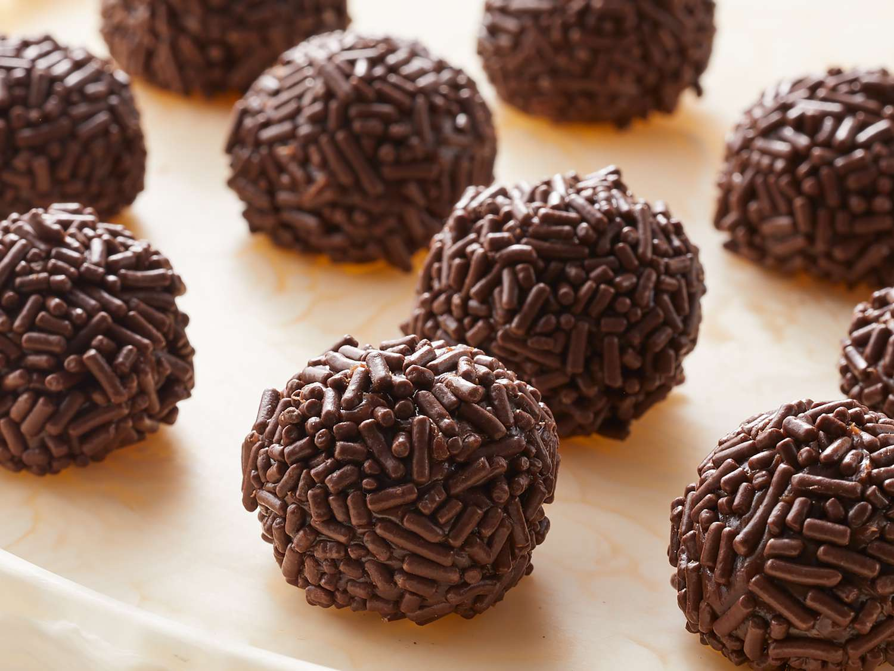

Brigadeiro

Description
This is a quick and easy recipe for brigadeiro, a delicious Brazillian sweet that's perfect for any occasion!
Ingredients
- 396g sweetened condensed milk
- 3 tbsp unsweetened cocoa powder
- 1 tbsp butter
- 160g chocolate sprinkles
Instructions
- Combine condensed milk, cocoa powder and butter in a saucepan and place over medium heat.
- Cook and stir until homogenous and thickened (about 10 minutes).
- When you can see the bottom of the pot for 2-3 seconds when dragging a spatula through, remove from heat.
- Pour mixture onto a greased bowl, then chill for an hour.
- Shape and roll the chilled mixture into balls.
- Roll the balls in chocolate sprinkles and serve. Enjoy!